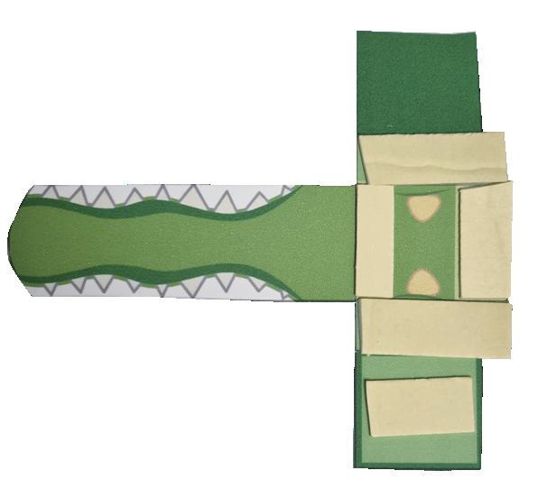
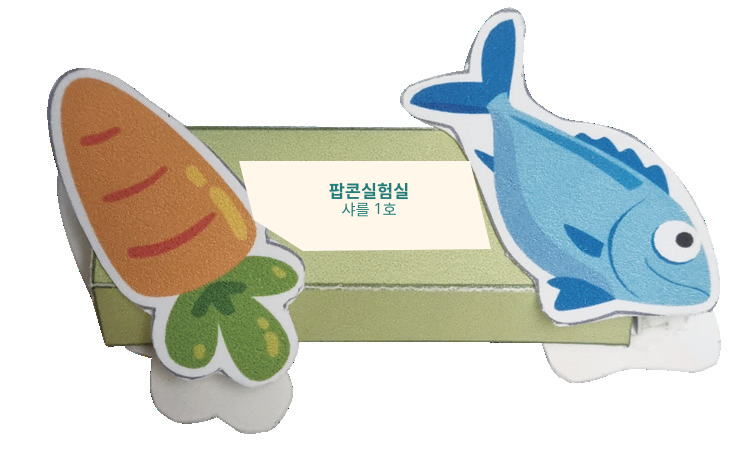
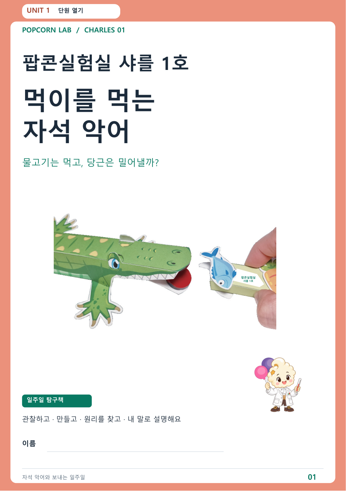
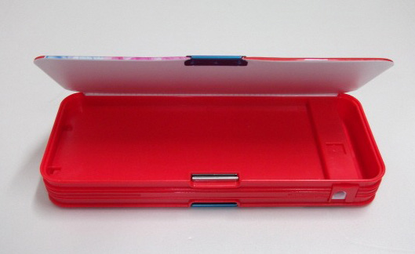
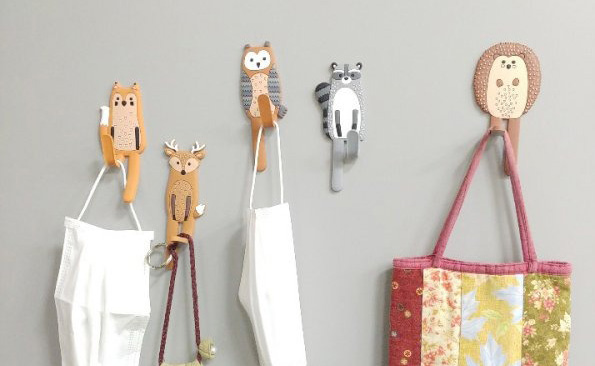
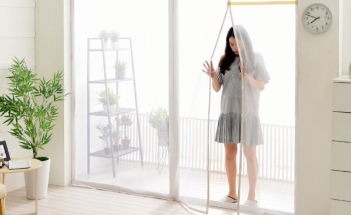
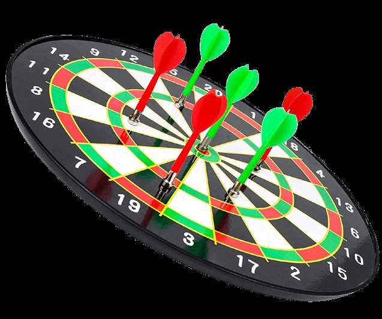
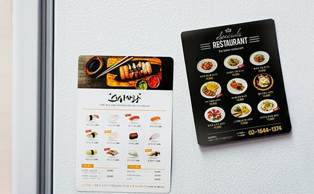
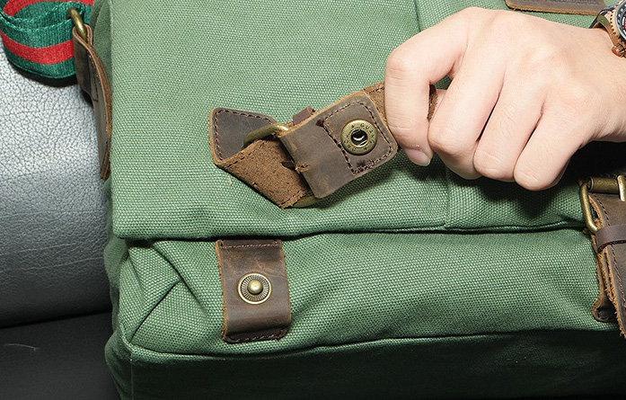

자석의 극을 찾아요.
막대자석은 양쪽 끝이 극이에요. 이 키트의 동전자석은 넓은 두 면이 각각 N극과 S극이에요. 클립이 잘 붙는 부분을 다른 부분과 비교해 보세요.
모든 금속이 자석에 붙지는 않아요. 이번에는 준비한 철 클립으로 확인해요.
클립 관찰 교재 보기 →빈 곳을 끌면 회전 · 두 손가락이나 휠로 확대 · 먹이를 잡아 가까이
준비됐나요? 저를 눌러 시작해요.
원리를 살피는 가상 실험이에요. 화면의 거리는 실제 cm가 아니며, 실물 관찰은 내가 직접 기록해요. 작은 자석과 가위는 보호자·교사와 함께 다루어요.
완벽하게 끝낼 필요는 없어요.
잘 안된 순간도 다음 탐구의 시작이에요.
자석 활동은 어른과 함께해요. 자석은 입·코·귀에 넣지 않아요. 시작과 끝에 개수를 세고, 느슨해지거나 떨어지면 멈추고 어른에게 알려요.
실물 키트 확인: 종이 도안 B·D·E, 동전자석, 막대자석, 물고기·당근 도안, 발포양면테이프·양면테이프. 따로 준비: 가위, 풀, 클립. 부품의 수량과 도안은 실물 키트에서 확인해요.
도안의 접는 선과 자석의 N·S 표시를 먼저 살펴요. 가위는 조심해서 쓰고, 작은 자석은 입에 넣지 않아요. 잘 떨어지는 자석은 어른과 함께 고정해요.

물고기와 당근을 각각 같은 거리에서 천천히 가까이 해 보세요. 입이 어떻게 움직였나요? 화면의 설명과 다르게 움직였다면, 먼저 내가 본 모습을 기록해요.
자석에는 N극과 S극이 있어요.
마주 보는 극을 바꾸어 원리를 살펴봐요.
N극과 N극, S극과 S극을 마주 보게 하면 서로 밀어내는 힘이 작용해요.
이 그림은 원리를 설명하는 모형이에요. 실제 악어의 움직임은 자석의 거리·방향, 종이 턱과 접힌 부분에 따라 달라질 수 있어요. 내 실험 결과는 직접 관찰해서 적어요.
막대자석은 양쪽 끝이 극이에요. 이 키트의 동전자석은 넓은 두 면이 각각 N극과 S극이에요. 클립이 잘 붙는 부분을 다른 부분과 비교해 보세요.
모든 금속이 자석에 붙지는 않아요. 이번에는 준비한 철 클립으로 확인해요.
클립 관찰 교재 보기 →원본 사진처럼 위턱과 아래턱 자석의 N극이 모두 바깥쪽을 향하도록 붙여요. 마주 보는 N극끼리 밀어내는 힘이 작용해요.
물고기가 붙은 쪽은 S극, 당근이 붙은 쪽은 N극이에요. 먹이를 가까이 했을 때 어떤 힘이 작용할지 생각한 뒤, 실제 움직임을 살펴봐요.
자석 붙이는 6단계 확인 →
물고기의 S극을 가까이 하면 악어 턱의 N극과 끌어당기는 힘이 작용해요. 원본 실험에서는 입을 다물며 물고기를 먹어요.
원리 설명이에요. 내가 만든 악어의 실제 모습은 관찰 기록에 남겨요.

글씨가 작으면 확대하고 화면을 움직여 읽어요. 인쇄해서 쓰려면 PDF를 내려받아요.
눈에 보이지 않는 힘이
물건을 붙잡거나 잠그는 일을 해요.

필통
고리
커튼
다트
냉장고 자석
가방자석 필통과 자석 가방은 뚜껑이나 입구가 닫히는 부분에 자석이 있어요. 서로 잘 붙어서 닫힌 상태를 유지하는 데 도움을 줘요.
냉장고 자석은 철이 포함된 문에 붙어요. 자석 고리도 철이 포함된 현관문 등에 붙여 작은 물건을 걸 수 있어요.
같은 자석의 힘을 이용해도 물건마다 맡은 일은 달라요. 내가 찾은 물건에서는 자석이 어떤 일을 하나요?
찾은 물건 기록하기 →보기 전에 궁금한 점 하나를 정해요.
확인된 외부 자료를 불러오는 중이에요.
기록은 선생님이나 서버로 전송하지 않아요. 저장을 켜도 현재 기기의 이 브라우저 안에만 남아요.